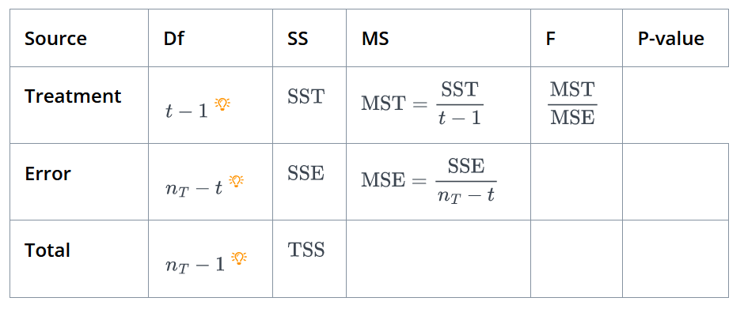

Before, One-sample t-test, Two-sampled t-test, Paired-Sampled t-test, and ANOVA statistical tests, a few baics :
Null Hypothesis : In statistics, Null Hypothesis is a theory or claim that no relationship exists between two sets of data or variable being analyzed. For a specific characteristic of interest, e.g. mean `μ`, of two data sets, null hypothesis can be written as: `H_0: μ(θ) = μ_0`
Alternate Hypothesis : Alternate Hypothesis, claims that a relationship does exists between two data sets, and any difference is not due to chance, but a cause
Test of Significance : It is a statistical procedure being followed in the light of new observation to assess if the hypothesis statement, `H_0: μ(θ) = μ_0`. It is also referred as test of hypothesis
P-Value : P-Value is the probability of obtaining results at least as extreme as the results actually observed, assuming the null hypothesis is true. It is used to determine the statistical significance of the test and whether the null hypothesis should be rejected or not.
The lower the p-value is, the lower the probability of getting that result if the null hypothesis were true, and the result obtained with lower p-value is then said to be statistically significant as it allows us to reject the null hypothesis. `0.05` is generally considered as statistically significant p-value.
One-sample t-test is a statistical test to compare the mean of a single group of data to a known value or hypothesized value of mean of population.
If we have sample size of `n` observations with `x_1, x_2, ..., x_n` observations in group, `μ` as the mean of group, `μ_0` is mean of population with null hypothesis, `H_0` stating mean of group, `μ` is equal to known/hypothesized mean of population, and
alternate hypothesis, `H_a` stating mean of group not equal to mean of population, which can be written as :
`H_0 : μ = μ_0`
`H_a : μ ≠μ_0`
then to calculate one-sample t-test, first we calculate sample mean, `\tildex` and sample standard deviation, `s` of group
`\tildex = \frac{\sumX_i}{n}`
`s = \sqrt\frac{∑(X_i - x̄)²}{n}`
Next, we calculate t-static as : `t = \frac{\tildex - μ_0}{(s//sqrt(n))}`
Under the null hypothesis, the t-statistic follows a t-distribution with n - 1 degrees of freedom. We can use this distribution to calculate the p-value of the test, which is the probability of obtaining a t-statistic, assuming the null hypothesis is true. If the p-value is less than a pre-specified significance level (e.g., 0.05), we reject the null hypothesis
An independent t-test is a statistical test used to compare the means of two independent groups to determine if there is a significant difference between them.
If we have two groups of data: one with `x_1, x_2, ..., x_(n1)` and size `n1`, and other with `y_1, y_2, ..., y_(n2)` and size `n2` with null hypothesis stating that two groups have the same mean, i.e, `H_0: μ_1 = μ_2` and the alternative hypothesis is that they have different means i.e, `H_0: μ_1 ≠ μ_2`
Here, again as in one-sample t-test we calculate first mean and standard deviation of both groups as given below:
`\tildex = \frac{\sumX_i}{n1}`
`\tildey = \frac{\sumY_i}{n2}`
`s1 = \sqrt\frac{∑(X_i - x̄)²}{n1}`
`s2 = \sqrt\frac{∑(Y_i - \tildey)²}{n2}`
Next, we calculate the pooled standard deviation, which is an estimate of the standard deviation of the population from which the samples were drawn:
`sp = \sqrt\frac{(n_1 - 1)s_1^2 + (n_2 - 1)s_2^2}{n_1 + n_2 -2}`
Finally, t-static is calculated as :
`t = \frac{\tildex - \tildey}{sp ⋅ \sqrt(\frac{1}{n1} + \frac{1}{n2})}`
Under the null hypothesis, the t-statistic follows a t-distribution with `(n1 + n2 - 2)` degrees of freedom. We can use this distribution to calculate the p-value of the test, assuming the null hypothesis is true. If the p-value is less than a pre-specified significance level (e.g., `0.05`), we reject the null hypothesis
A paired t-test is a statistical test used to compare the means of two measurements taken from the same individual, or related data sets. Here "paired" measurements is to represent things like:
1. A measurement taken at two different times (e.g, pre-test, post-test)
2. A measurement taken under two different conditions (e.g, control/experiment)
3. A measurement taken from the two halves of the same data sets.
Paired Sample t-test is also knowns as "Dependent t-test", "Paired t-test", "Repeated Measure t-test"
If we have two sets of measurement groups, both with same size `n`, but with different data points: `x_1, x_2, ..., x_n` for the first set, and `y_1, y_2, ..., y_n` for the second.
The null hypothesis is that the two sets have the same mean, `H_0: μ_1 - μ_2 = 0` and the alternative hypothesis is that they have different means. `H_a: μ_1 - μ_2 ≠ 0`
Again, we calculate the sample mean, and sample standard deviation of the diffferences of two sets, `d_i = Y_i - X_i`
`\tilded = \frac{\sumd_i}{n}`
`s = \sqrt\frac{(\sumd_i - \tilded)^2}{n}`
Next, we calculate t-static as : `t = \frac{\tilded}{s//\sqrtn}`
Under the null hypothesis, the t-statistic follows a t-distribution with n - 1 degrees of freedom. We can use this distribution to calculate the p-value of the test, which is the probability of obtaining a t-statistic, assuming the null hypothesis is true. If the p-value is less than a pre-specified significance level (e.g., 0.05), we reject the null hypothesis
ANOVA is a statistical test used to compare the means of three or more groups. ANOVA is also known as "One Factor ANOVA" or "Between Subjects ANOVA"
Null Hypothesis in ANOVA is that the means of all groups have the same mean, i.e, `H_0: μ_1, = μ_2 = ,..., = μ_t`. The alternate hypothesis is then, at least one of the population mean is not equal to the others i.e, `H_a: μ_i ≠ μ_j` for some `i` and `j` where `i ≠ j`
Test Static for ANOVA:
For more than two populations, test-static, F, is used. It is a ratio of between group sample variance and the within group sample variance `F = `between group variance / within group variance
Under the null hypothesis, ratio between both values should be close to 1, otherwise null hypothesis would get reject.
For computing F-static, if we have :
`t` : total number of data groups
`y_(ij)` : The `j^(th)` observation from the `i^(th)` population
`n_i` : The sample size from the `i^(th)` population
`n_T` : The total sample size i.e, `n_T = \sum_(i=1)^t n_i`
`\tildey_i` : The mean of the sample from the `i^(th)` population
`\tildey_T` : The mean of the combined data from all the population - overall mean
Then, further we need following before calculating F-static :
Sum of Squares for Treatment or the Between the Group Sum of Squares
SST `= \sum_(i=1)^t n_i (\tildey_i - \tildey_T)^2`
Sum of Squares for Error or the Within Group Sum of Squares
SSE `= \sum_(i,j)(y_(ij) - \tildey_i)^2`
Total Sum of Squares :
TSS `= \sum_(i,j)(y_(ij) - \tildey_T)^2`
Here, it can be derived as TSS = SST + SSE, now we can set-up ANOVA table to find F-static. ANOVA table is provided below :
